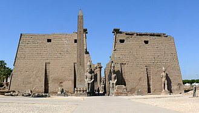
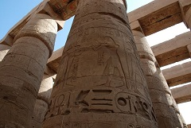
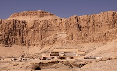
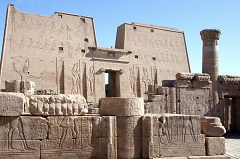

Todo sobre Egipto
Introducción
Egipto, "Miṣr" pronunciado en dialecto egipcio, es un país soberano transcontinental. Está ubicado mayoritariamente en el extremo nororiental de África, mientras que en Asia se encuentra la península del Sinaí. Limita con Sudán al sur, con Libia al oeste, y al noreste con Israel y la Franja de Gaza (Palestina). Al norte limita con el mar Mediterráneo y al este y sureste con el mar Rojo frente a Arabia Saudita.
La mayor parte de su superficie la integra el desierto del Sahara. El río Nilo cruza el desierto de sur a norte, formando un estrecho valle y un gran delta en su desembocadura en el Mediterráneo. Estas tierras fértiles se hallan densamente pobladas, concentrando la cuarta mayor población nacional de África. Casi la mitad de los egipcios viven en áreas urbanas, sobre todo en los centros densamente poblados de El Cairo, su capital y Alejandría.
Platos típicos
- tabbouleh: ensalada de perejil y sémola de trigo de sabor ácido;
- baba ghannoush: puré de berenjenas con ajo;
- fattah:
- capas de pan seco empapado en caldo
- arroz y carne aliñado con ajo y vinagre y cubierto con yogur
- nueces
- pasas
- basterma: cecina ahumada;
Templos
| Abu Simbel & Templos de Egipto | ||
|---|---|---|
| Templos más importantes | Pocas civilizaciones de la Antigüedad se esforzaron tanto en la edificación de templos como lo hicieron los egipcios. En la actualidad, tenemos constancia de centenares de construcciones que tuvieron diversas funciones, ya fuera el culto religioso a dioses locales o nacionales, servir como centro administrativo o actuar como propaganda del gobernante. Gracias a estos monumentos somos capaces de comprender numerosos elementos de la cultura egipcia a lo largo de los 3000 años que perduró en la ribera del Nilo. No todos los templos egipcios tuvieron la misma importancia, siendo algunos de ellos construcciones monumentales y otros pequeños recintos. Aparte, algunos de ellos destacaron solo en momentos concretos de la historia egipcia. | |
| Templo de Luxor | Tempo de Karnak | |
|  |  | |
| Templo de Hatseput | Templo de Edfu | |
|  |  | |